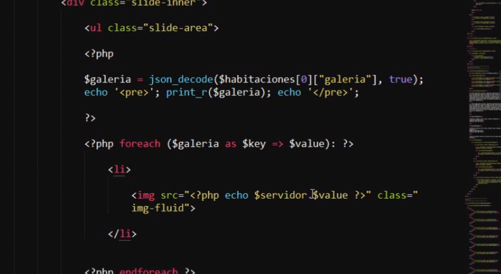
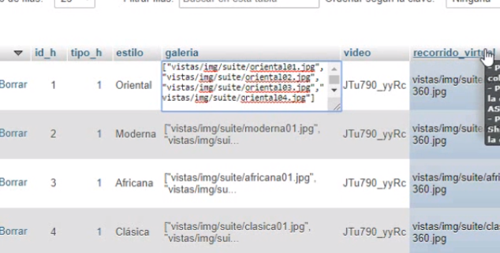

El campo tiene varios valores tipo un json para convertirlo y despues recorrerlo se hace con la 
funcion json_decode como se ve el campo en este caso es galeria y se le dice que lo convierta a un json.



